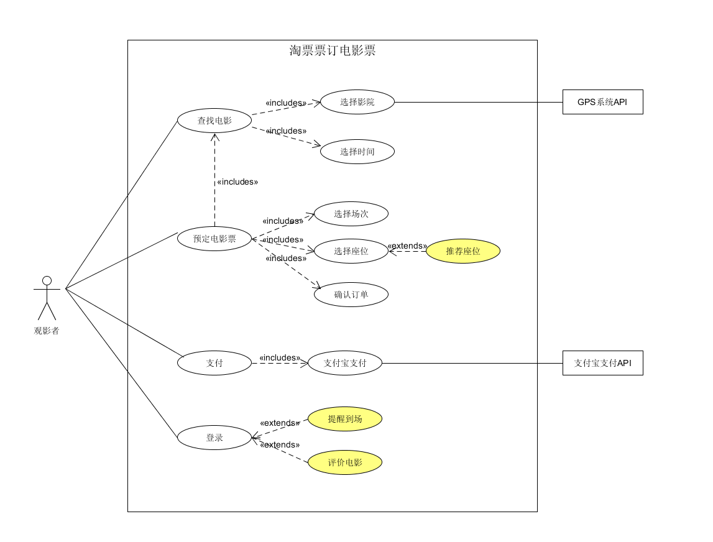

建模练习:
1. 定旅馆

2. 定电影票
- 相似的系统中，用户预期的功能都是相似的，不同的同类系统一定具有一致基本功能以及带有自己特色的扩展功能。例如酒店预订系统中，使用该系统的用户一般需要提供时间、地点、价格等信息，检索出符合信息的房间后预定，酒店预定系统都需要这样的功能，才能够满足用户最基本的需求。因此，相似的系统往往会有相似的功能，也就具有相似的actor、use case和associate，因此也就具有相似的用例图。
- 不同时代对预定的酒店的需求基本相同。但实现需求的过程中可以有很大的改进，在筛选过程中，可以使用更多的筛选条件以及更好的筛选算法，满足各种不同的主流要求。可以建立更好的用户反馈系统，及时更新相关酒店的评价信息，方便用户选择拥有更多的参考意见。根据不同地区的消费特点不同，可以根据用户的历史订单推荐更符合用户喜好的类型的酒店，并在用例图上突出这些特点。
- 相似的系统用例图也是相似的，对于一个创新的思路，如一个新的业务模式，往往会产生一个不同的用例图，与传统业务的用例图相比，新的思路是如何对主场景（primary scenario）或者是备用场景（alternate scenario）产生作用的，哪些业务逻辑发生了变化，那些相关的用例发生了改变，对创新部分的用例使用不同颜色进行标注，可以方便开发人员和投资方快速找到核心竞争力及可能带来的结果，便可以定位创新思路在系统中的作用。
- 请使用 SCRUM 方法，选择一个用例图，编制某定旅馆开发的需求（backlog）开发计划表
| ID | Name | Imp | Est | How to Demo |
| 01 | 查找酒店 | 2 | 2 | 用户根据自己的要求对酒店进行筛选 |
| 02 | 预订酒店 | 3 | 3 | 筛选好了酒店以后用户可以对该酒店的其他信息进行查看和选择 |
| 03 | 提交订单 | 4 | 4 | 根据已选情况下订单，订单信息应同步到用户和旅馆双方 |
| 04 | 支付 | 5 | 5 | 使用支付平台进行支付 |
| 05 | 管理订单 | 4 | 4 | 允许用户查看并操作自己的订单 |
| ID | 用例 | 事务 | 计算 | 原因 | 基本权重 |
| 01 | 查找酒店 | 2 | 2 | 使用位置和api | 平均 |
| 02 | 预订酒店 | 3 | 3 | 简单 | |
| 03 | 提交订单 | 4 | 4 | 简单 | |
| 04 | 支付 | 5 | 5 | 使用外部api | 平均 |
| 05 | 管理订单 | 4 | 4 | 简单 |